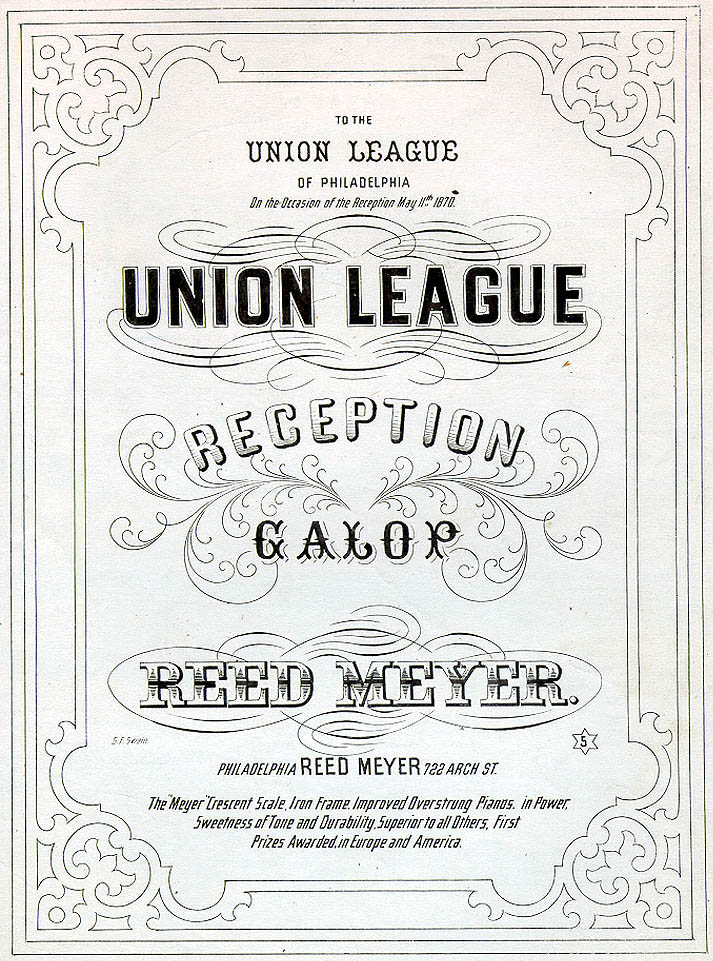

|
Union Leagues were secret membership organizations that
originated in the North during the Civil War to promote
patriotic behavior in support of the Union cause. Over the
course of the Civil War the leagues moved south with
Northern soldiers and found support among freedmen, women,
and white yeoman farmers who were dissatisfied with the
Confederate cause. In the South, the leagues took on a truly
important role as they became strongholds of the Southern
Republican Party, while educating newly freed slaves about
the democratic process and helping them to harness their
political power.
The Southern Union Leagues were considered radical in
their approach to African American political participation
in the South. There was strong resistance in the South to
any association enrolling freed slaves into a secret,
|

An invitation to a fundraiser held by the Union League
of Philadelphia.
|
oath-bound association for the express purpose of making
voting Americans of them. The National Council of the Union
Leagues, headquartered in Washington, D.C., attempted to set
a moderate tone for their Southern associates. The
Council's goal was to establish a strong Republican Party in
the South and to encourage political involvement for
freedmen. At the same time, it wanted the Southern Leagues
to restrain their militancy, in order to avoid alienating
white Southerners.
While the Leagues functioned primarily as a political
machine for the Republican Party, they provided education,
and social and economic support as well. The Leagues hosted
wide-ranging political discussions and debates, and promoted
schools and churches on the local level. They petitioned
against local officials hostile to freed members, and
supported African American claims for veterans' benefits.
Finally, they offered advice in financial planning,
employment, legal issues, and politics.
Despite the enthusiastic reaction of black Southerners to
the Union Leagues, they were short-lived. The Leagues'
obvious support of African American political and social
rights alienated interested white farmers.. By 1869,
membership numbers were in decline. The Ku Klux Klan
targeted League members and meetings as part of their
campaign to disenfranchise freedmen. That violence, in
combination with the rise of "redemption" governments in the
South, spelled the end of the Union Leagues. The failure of
the Union Leagues is reflective of the larger failure of
Reconstruction to successfully establish a place for
Southern African Americans and the Republican party in the
South's political landscape.
Source: Joan Waugh, ed., Facts on File Encyclopedia of American
History: Civil War and Reconstruction, 1856 to 1869 (New York: Facts on
File, 2003), 367-368.
|